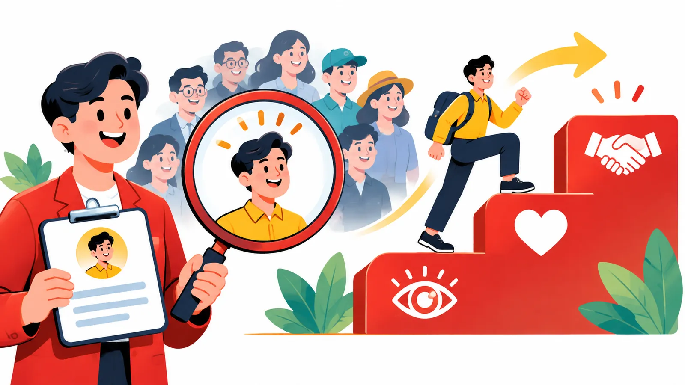

01Buổi 1 trên 8
Xác định đúng đối tượng khách hàng
Biết khách hàng tốt nhất là ai, hiểu họ đủ sâu và nói đúng ngôn ngữ của họ để mỗi video YouTube đưa người xem tới gần quyết định mua.
Mục tiêu buổi học
- Giải thích được vì sao nội dung YouTube của doanh nghiệp phải hướng tới doanh thu qua ba bước biết đến, yêu thích, tin tưởng.
- Xây dựng hồ sơ khách hàng mục tiêu (ICP) dựa trên cuộc sống thực tế của khách hàng tốt nhất, không phải khách hàng trung bình.
- Phân biệt ba cấp độ bằng chứng và chọn cấp độ mạnh nhất để xây niềm tin.
- Điều chỉnh tiêu đề, cách nói và thời điểm đăng theo đúng đối tượng, thị trường và cá tính của người dẫn.
Tóm tắt 30 giây
Kênh YouTube của doanh nghiệp tồn tại để bán hàng, và người xem chỉ mua khi đã biết đến, yêu thích rồi tin tưởng bạn. Muốn vậy, bạn cần làm nội dung cho nhóm khách hàng tốt nhất mình muốn thu hút, hiểu họ qua một tài liệu ICP chi tiết và gọi đúng tên họ trong từng video. Niềm tin mạnh nhất đến khi người xem tự áp dụng kiến thức của bạn và có kết quả. Cách nói cũng phải hợp với văn hóa, thời điểm và mang cá tính thật của người dẫn.

1. Mục tiêu cuối cùng của nội dung là doanh thu
Nếu bạn xây kênh YouTube cho doanh nghiệp, mục tiêu cuối cùng của nội dung phải là bán hàng. Lượt xem, lượt theo dõi chỉ là chặng giữa trên đường đi tới đơn hàng.
Để mua hàng, khách hàng cần đi qua ba giai đoạn, thường theo đúng thứ tự sau:
| Giai đoạn | Tiếng Anh | Hình thành nhờ |
|---|---|---|
| Biết đến bạn | Know | Lượt xem và khả năng tiếp cận của video |
| Yêu thích bạn | Like | Cá tính, quan điểm, cách giao tiếp và phong cách thể hiện của bạn |
| Tin tưởng bạn | Trust | Kiến thức, kinh nghiệm, bằng chứng và kết quả thực tế bạn mang lại |
Trước khi làm bất kỳ ý tưởng video nào, hãy tự hỏi: "Video này có giúp khách hàng mục tiêu biết đến, yêu thích hoặc tin tưởng chúng ta nhiều hơn không?" Nếu câu trả lời là không, hãy cân nhắc bỏ ý tưởng đó.
Ghi nhớMỗi video phải đẩy được ít nhất một trong ba nấc: biết đến, yêu thích, tin tưởng. Video không đẩy được nấc nào thì chưa đáng sản xuất.
2. Làm nội dung cho khách hàng tốt nhất, không phải khách hàng trung bình
Đây là cách nghĩ do Jeremy Haynes chia sẻ. Giả sử doanh nghiệp của bạn đang có doanh thu 200.000 USD/tháng. Thoạt nghe, bạn sẽ nghĩ nên làm nội dung cho những người cũng đang ở mức 200.000 USD/tháng. Chưa chắc.
Những người ở mức 200.000 USD thường đang theo dõi những người đã đạt 1 triệu USD/tháng, vì họ muốn biết người ở cấp cao hơn tư duy, vận hành và phát triển doanh nghiệp ra sao. Giống như người chạy bộ 5 km hay đọc bí quyết của người chạy marathon: họ nhìn lên, không nhìn ngang.
Vì vậy, nếu khách hàng hiện tại của bạn chủ yếu ở mức 200.000 USD/tháng, hãy thử làm nội dung hướng tới nhóm nhà sáng lập đang đặt mục tiêu 1 triệu USD/tháng. Nhóm khách hàng hiện tại vẫn theo dõi bạn, vì đó chính là cấp độ họ muốn đạt tới.
Ghi nhớĐừng làm nội dung chỉ dành cho khách hàng trung bình. Hãy hướng tới nhóm khách hàng tốt nhất mà bạn muốn thu hút.
3. Xây dựng hồ sơ khách hàng mục tiêu (ICP)
Với mỗi doanh nghiệp, nên có một tài liệu ICP (Ideal Customer Profile) riêng: bản mô tả chân dung người khách lý tưởng mà toàn đội cùng nhìn vào. Tài liệu này không dừng ở tuổi tác, giới tính, nghề nghiệp hay thu nhập. Điều quan trọng hơn là hiểu được cuộc sống thực tế của khách hàng.
Hãy trả lời các câu hỏi sau:
- Số tiền bao nhiêu được xem là lớn đối với họ?
- Họ thường dùng những từ ngữ và cách diễn đạt nào?
- Một ngày bình thường của họ diễn ra như thế nào?
- Họ đang gặp những vấn đề gì?
- Họ quan tâm điều gì nhất?
- Họ thường suy nghĩ và ra quyết định như thế nào?
Khi người viết kịch bản hoặc biên tập viên không biết nên triển khai nội dung ra sao, ICP là tài liệu đầu tiên họ cần mở ra.
4. Có ba cấp độ bằng chứng để xây dựng niềm tin
Không phải bằng chứng nào cũng thuyết phục như nhau. Có thể chia thành ba cấp độ, từ yếu tới mạnh:
| Cấp độ | Ai nói | Ví dụ | Sức thuyết phục |
|---|---|---|---|
| 1 | Bạn tự nói về bản thân | "Tôi là chuyên gia Marketing, có nhiều năm kinh nghiệm, đã giúp hàng trăm doanh nghiệp tăng trưởng" | Yếu nhất |
| 2 | Người khác nói về bạn | Khách hàng đánh giá tốt, đối tác giới thiệu, học viên chia sẻ kết quả | Cao hơn |
| 3 | Người xem tự trải nghiệm và có kết quả từ kiến thức của bạn | Một người xem video, áp dụng chiến lược được chia sẻ và thực sự đạt kết quả | Mạnh nhất |
Ở cấp độ 3, người xem bắt đầu tin bạn ngay cả khi chưa từng mua sản phẩm nào. Đây cũng là một trong những cách những người như Alex Hormozi xây dựng sức ảnh hưởng rất lớn: họ không chỉ nói mình giỏi, họ liên tục đưa ra giá trị mà người xem có thể áp dụng và tự kiểm chứng.
Ví dụMột người xem video của bạn, làm theo một chiến lược được chia sẻ và đạt kết quả thật. Từ lúc đó, họ tin bạn hơn mọi lời tự giới thiệu, dù chưa trả một đồng nào.
5. Gọi đúng tên khách hàng bạn muốn thu hút
Video càng nói rõ đối tượng người xem thì càng dễ thu hút đúng khách hàng. So sánh hai tiêu đề:
| Tiêu đề chung chung | Tiêu đề gọi đúng tên |
|---|---|
| "Cách phát triển doanh nghiệp hiệu quả" | "5 sai lầm khiến chủ doanh nghiệp có doanh thu 500 triệu/tháng mãi không thể tăng trưởng" |
Tiêu đề thứ hai có thể thu hút ít người hơn, nhưng những người bấm vào lại có khả năng khớp với khách hàng mục tiêu hơn. Giống như gọi tên một người giữa đám đông: ít người quay lại hơn, nhưng đúng người cần gặp.
Ghi nhớHãy xây dựng mỗi video như thể bạn đang nói chuyện trực tiếp với một người. Dùng chính ngôn ngữ, cách diễn đạt và những vấn đề người đó đang quan tâm.
6. Mỗi thị trường có một cách giao tiếp khác nhau
Một chiến lược hiệu quả ở thị trường này chưa chắc hợp với thị trường khác. Ngoài văn hóa, thời điểm đăng cũng ảnh hưởng tới hiệu quả nội dung.
Ví dụMột kênh làm nội dung cho khách hàng tại Hà Lan. Ban đầu, kịch bản đi theo phong cách Mỹ: đưa liên tục bằng chứng thành tích ngay từ phút đầu. Kết quả là phần bình luận kém tích cực hơn và doanh số giảm theo, vì người xem Hà Lan dễ cảm thấy cách thể hiện đó giống khoe khoang. Sau khi điều chỉnh, kênh thôi nói liên tục về thành tích mà đưa bằng chứng tự nhiên hơn, qua kết quả thực tế của những người tham gia chương trình.
Với cùng khách hàng này, các video dạng vlog trong mùa hè gần như không có kết quả tốt, vì phần lớn đối tượng mục tiêu đang đi nghỉ và ít cảm thấy áp lực công việc. Đến tháng 10, khi mọi người quay lại làm việc và trời Hà Lan bắt đầu mưa nhiều, các vấn đề trong công việc lại hiện rõ, và nội dung có cơ hội kết nối tốt hơn với người xem.
Lưu ýĐừng chỉ nghiên cứu khách hàng. Hãy hiểu cả bối cảnh văn hóa, thời điểm và trạng thái tâm lý của họ. Cùng một thông điệp, nói sai lúc hoặc sai giọng vẫn có thể phản tác dụng.
7. Cá tính cá nhân cũng là một phần của niềm tin
Nhiều nhà sáng lập bán sản phẩm đào tạo nghĩ rằng khi lên camera, họ phải luôn nghiêm túc và chuyên nghiệp. Đó là một sai lầm.
Nội dung thiếu cá tính khiến người xem có cảm giác mình đang bị bán hàng nhiều hơn. Ngược lại, khi bạn thể hiện con người thật, quan điểm và phong cách riêng, người xem dễ kết nối với bạn hơn.
Lưu ýKiến thức tốt chưa đủ. Nếu người xem không thích cách bạn thể hiện, khả năng họ tiếp tục theo dõi và tin tưởng bạn cũng thấp hơn.
Checklist áp dụng
Tiến độ được lưu trên trình duyệt của bạn.
Bài tập thực hành
- Viết tài liệu ICP một trang. - Đầu vào: hiểu biết của bạn về khách hàng tốt nhất bạn muốn thu hút. - Cách làm: trả lời sáu câu hỏi ở mục 3 cho nhóm khách hàng tốt nhất, không phải khách hàng trung bình. - Đầu ra: một trang ICP mà người viết kịch bản đọc xong biết nên nói với ai và nói thế nào.
- Đánh giá 10 ý tưởng video tiếp theo. - Đầu vào: danh sách 10 ý tưởng video sắp làm. - Cách làm: với từng ý tưởng, ghi rõ video giúp khách hàng biết đến, yêu thích hay tin tưởng bạn hơn. - Đầu ra: bảng 10 ý tưởng kèm giai đoạn tương ứng; ý tưởng không giúp được giai đoạn nào thì đánh dấu để cân nhắc bỏ.
- Viết lại phần mở đầu một video. - Đầu vào: phần mở đầu của một video có sẵn hoặc sắp quay. - Cách làm: viết lại sao cho gọi đúng tên đối tượng bạn muốn hướng tới, dùng ngôn ngữ của họ. - Đầu ra: đoạn mở đầu mới mà người xem đúng đối tượng nghe xong thấy "video này nói về mình".
Câu hỏi tự kiểm tra
Ba giai đoạn khách hàng cần đi qua trước khi mua là gì, và mỗi giai đoạn hình thành nhờ đâu?
Xem gợi ý
Biết đến (lượt xem, khả năng tiếp cận), yêu thích (cá tính, quan điểm, cách giao tiếp), tin tưởng (kiến thức, kinh nghiệm, bằng chứng, kết quả thực tế).
Nếu khách hàng hiện tại có doanh thu 200.000 USD/tháng, nên làm nội dung cho nhóm nào và vì sao?
Xem gợi ý
Cho nhóm nhà sáng lập hướng tới 1 triệu USD/tháng, vì khách hàng hiện tại theo dõi người ở cấp độ họ muốn đạt tới.
Tài liệu ICP cần trả lời những gì ngoài tuổi tác, giới tính, nghề nghiệp, thu nhập?
Xem gợi ý
Số tiền họ coi là lớn, từ ngữ họ dùng, một ngày của họ, vấn đề họ gặp, điều họ quan tâm nhất, cách họ suy nghĩ và ra quyết định.
Cấp độ bằng chứng nào mạnh nhất và tại sao?
Xem gợi ý
Cấp độ 3, khi người xem tự áp dụng kiến thức của bạn và có kết quả, nên tin bạn ngay cả khi chưa mua gì.
Vì sao phong cách kịch bản kiểu Mỹ không hiệu quả với khách hàng tại Hà Lan trong ví dụ?
Xem gợi ý
Người xem Hà Lan cảm thấy việc liên tục đưa thành tích từ phút đầu giống khoe khoang, làm bình luận kém tích cực và doanh số giảm.